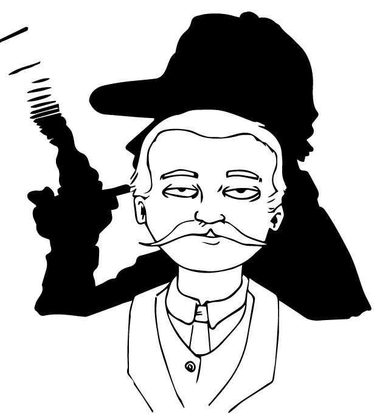

Arthur Conan Dooyle
Considerato il fondatore del
genere giallo e di quello fantastico.
Qualcosa sullo scrittore
Considerato il fondatore del genere giallo e di quello fantastico, Sir Arthur Ignatius Conan Doyle, è stato uno scrittore e drammaturgo britannico dell’‘800 e del ‘900. Si è però anche dedicato a romanzi
d’avventura, di fantascienza, del soprannaturale e di carattere storico. Il personaggio di Sherlock Holmes da lui creato è diventato negli anni un’importante figura di rilievo per la cinematografia.